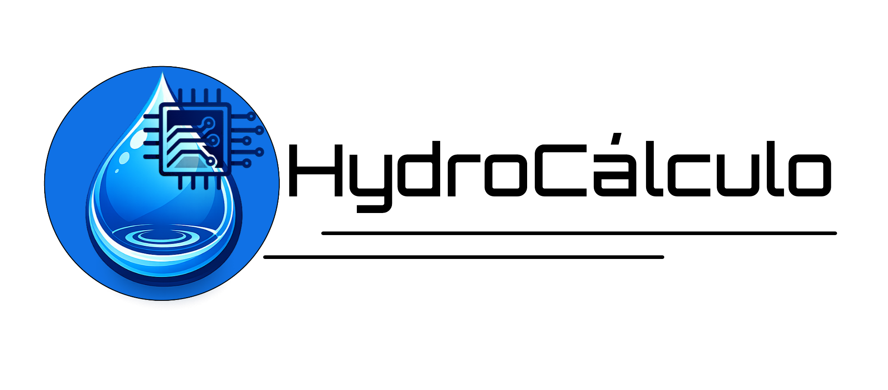

Email: tlemostavares@gmail.com

Este site nasceu de um grupo de estudantes de Sistemas de Informação - FeMASS. A ideia surgiu ao escrevermos nosso artigo sobre o gasto de água pela IA. Seu objetivo é calcular uma estimativa de gasto individual de água com as perguntas feitas aos chatbots. Desse modo, podemos ajudar a conscientizar as pessoas que o usarem sobre o consumo hídrico das IAs e o quanto isso está diretamente ligado a elas.
Clique aqui para conferir o nosso artigo na Revista ... e entender melhor como tudo isso está conectado.
Contato:
Email: tlemostavares@gmail.com